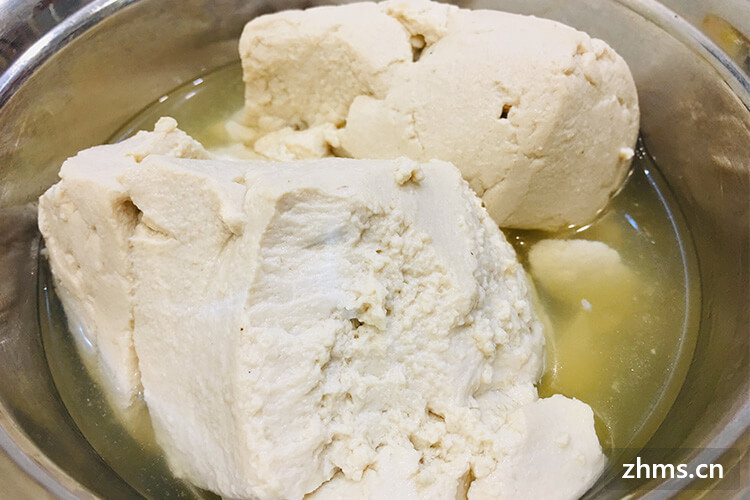
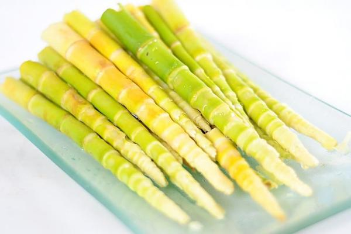

黑豆花
是豆花的变种，在市面上售卖的豆花一般是以黄豆为主，
而黑豆的营养价值更胜黄豆。井水黑豆花，以上等黑豆进行秘制，
辅以金佛山天然山泉，吃起来绵扎，要是再和着木耳、芫荽，则又增加了香脆，口感很好

方竹笋
在南川，必须品尝的美食首推方竹笋。
方竹主要生长在海拔1400米至2000米的金佛山区，
形呈四方，有棱有角，其笋不发于春而茂于秋，
新鲜的方竹笋通常采摘于八九月份。用金佛山的泉水，
加胡椒、葱白、大蒜、枸杞、淀粉等，经高压烧至七成熟，
然后捞起，淋上汤汁。方竹笋晶莹剔透、肉质肥厚，
放入嘴中慢慢咀嚼，鲜香脆嫩、唇齿余香
